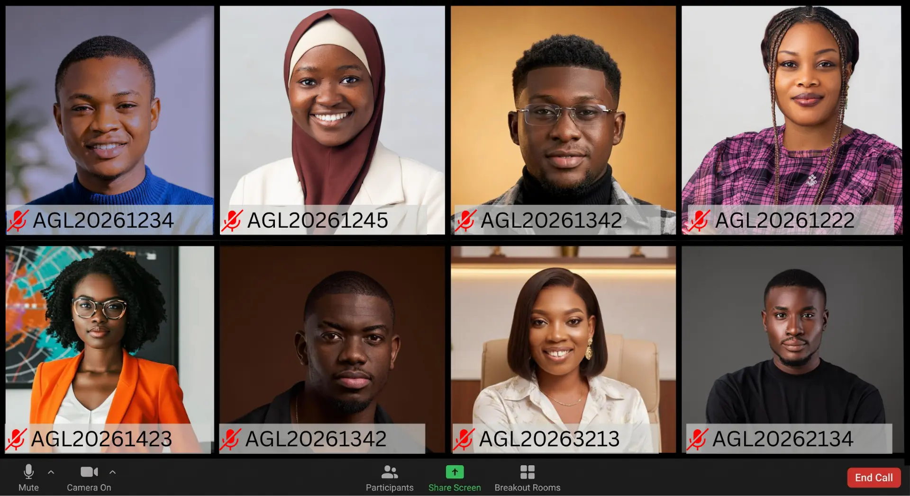
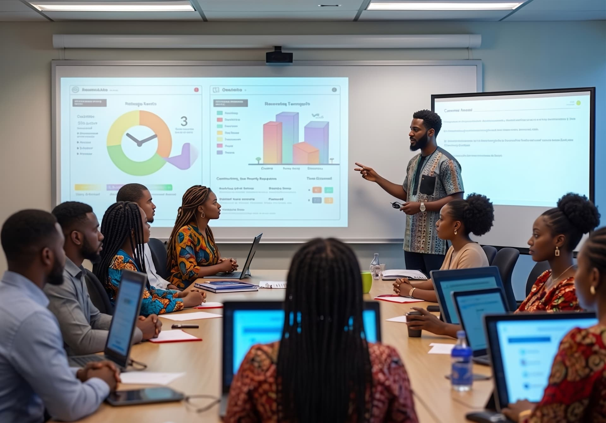

Beyond a Degree, Earn Respect.
Achieve a prestigious, highly respected credential that sets you apart.
Explore our programsAcademics
Explore skills-based undergraduate, postgraduate and professional programs built for the future of work.
Explore programsAbout us
American Open University Nigeria blends technology, industry partnership and academic rigour.
Learn moreApply & admissions
Applications for the upcoming academic cohort are open. Fast-track your career with flexible, world-class degree programs.
Get startedWhy Choose Us
The A-Global Advantage
Skill-Based Curriculum
Programs built around the practical, in-demand competencies needed to thrive in the future of work.
Technology-Driven Learning
Cutting-edge delivery that makes a world-class education affordable, flexible, and genuinely engaging.
Global Impact
Learn from international faculty and graduate with skills recognised by industries worldwide.
Dual Certifications
Graduate with industry credentials backed by leaders like Google and Cisco alongside your degree.
Academic Programs
Explore Your Future
Choose a program designed to help you build the knowledge, skills, and credentials needed for a changing world.
Student Journey
Your Journey Starts Here
From your first application to graduation and beyond, A-Global is designed to support every stage of your journey.
Apply
Choose your program and complete your application online.
Get Admitted
Receive your admission decision and onboarding information.
Learn
Study through flexible, technology-driven learning designed around practical skills.
Build
Apply your knowledge through projects, practical work, industry credentials, and real-world experiences.
Graduate & Advance
Graduate with the knowledge, credentials, and capabilities to advance your career.
Student Life
More Than a Classroom
Build connections, explore opportunities, and become part of a growing academic community.


Your Future Starts Here.
Take the next step toward an education built for the future of work.